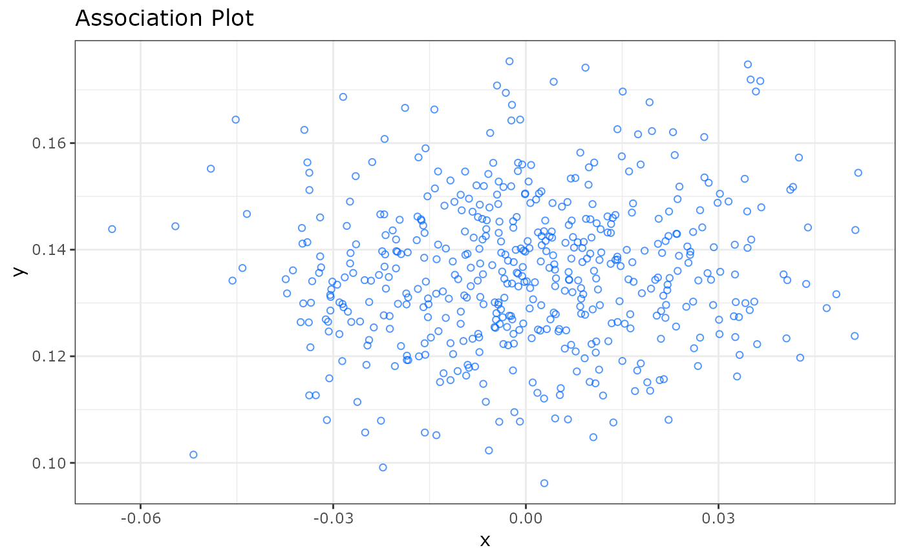

apl.RdPlot an Association Plot for the chosen columns.
apl(
caobj,
type = "ggplot",
rows_idx = NULL,
cols_idx = caobj@group,
row_labs = FALSE,
col_labs = FALSE,
show_score = FALSE,
show_cols = FALSE,
show_rows = TRUE,
score_cutoff = 0,
score_color = "rainbow"
)An object of class "cacomp" and "APL" with apl coordinates calculated.
"ggplot"/"plotly". For a static plot a string "ggplot", for an interactive plot "plotly". Default "ggplot".
numeric/character vector. Indices or names of the rows that should be labelled. Default NULL.
numeric/character vector. Indices or names of the columns that should be labelled. Default is only to label columns making up the centroid: caobj@group.
Logical. Whether labels for rows indicated by rows_idx should be labeled with text. Default TRUE.
Logical. Whether labels for columns indicated by cols_idx shouls be labeled with text. Default FALSE.
Logical. Whether the S-alpha score should be shown in the plot.
Logical. Whether column points should be plotted.
Logical. Whether row points should be plotted.
Numeric. Rows (genes) with a score >= score_cutoff will be colored according to their score if show_score = TRUE.
Either "rainbow" or "viridis".
Either a ggplot or plotly object.
For an interactive plot type="plotly" can be chosen, otherwise a static plot will be returned. The row and column coordinates have to be already calculated by `apl_coords()`.
Association Plots: Visualizing associations in high-dimensional
correspondence analysis biplots
Elzbieta Gralinska, Martin Vingron
bioRxiv 2020.10.23.352096; doi: https://doi.org/10.1101/2020.10.23.352096
set.seed(1234)
# Simulate counts
cnts <- mapply(function(x){rpois(n = 500, lambda = x)},
x = sample(1:100, 50, replace = TRUE))
rownames(cnts) <- paste0("gene_", 1:nrow(cnts))
colnames(cnts) <- paste0("cell_", 1:ncol(cnts))
# Run correspondence analysis
ca <- cacomp(obj = cnts, princ_coords = 3)
#> Warning:
#> Parameter top is >nrow(obj) and therefore ignored.
# Calculate APL coordinates for arbitrary group
ca <- apl_coords(ca, group = 1:10)
# plot results
# Note:
# Due to random gene expression & group, no highly
# associated genes are visible.
apl(ca, type = "ggplot")
